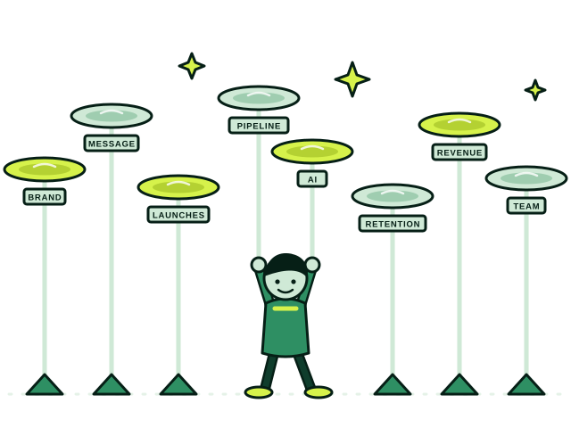
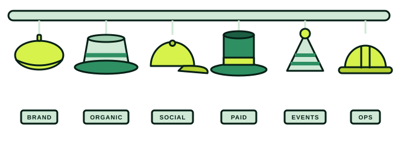

Fractional CMO · B2B marketing & GTM
I’m a fractional CMO and a hands-on marketer for B2B companies. I can be the one person who runs your marketing, or the leader who builds and directs the team around you. You pick the altitude; I meet you there.

A fractional CMO is a senior marketing leader who works with your company on a flexible basis, owning strategy and results without a full-time executive’s cost. My work sits on a spectrum, from the hands-on practitioner who does the work to the leader who sets the plan, hires the team and manages the agencies. Where a company lands on it depends on what it needs, and the right spot moves as the company grows.
Where the company is, where it’s trying to get to, and what has to be true about the market’s understanding of you to close that gap.
Positioning, launch plans, and sales enablement that actually gets used on calls, not left in a shared drive nobody opens after the kickoff.
The channels worth the spend, and just as useful to know, the ones you should stop funding.
A brand overhaul doesn’t have to take a year. I ran one in eight weeks at a mid-scale-up, without stopping everything else the team was doing.
HubSpot set up properly, lead-to-deal ownership between marketing and sales, and the sequences and reporting that sit on top.
Where AI actually earns its place across sales, marketing and customer-facing work, and how to build it into the day-to-day instead of a pilot nobody uses.
Finding and choosing the right tools, implementing them, and managing the change that comes with adoption, so the team uses what you bought.
I’ve grown a marketing function from one person to eight in six months. I know what the first five hires should actually be, and in what order.
I’ve been a company’s first marketing hire, and I’ve built a go-to-market foundation from nothing at a pre-revenue startup. So I’m not thrown by a company with no marketing function yet: no CRM, no clear message, no one to hand work to. I know what to build first, what can wait, and when it’s time to stop doing everything myself and hire.
I’m upfront from the first call about which parts of your scope I can handle myself and where it’s more efficient and more impactful to bring in another resource: an agency, a freelancer, a hire. If the honest answer is that you need a specialist, I’ll say so.
All the hats

Pick your altitude
I’m the one writing the copy, deploying the emails, cleaning up the CRM, and running the campaigns and marketing ops underneath them.
I set the strategy, hire and onboard new team members, manage the agencies, and then manage every piece of the plan.
These engagements are often fluid. In my best work I’m toggling between strategy and tactics all the time, which means the person who built the strategy is also doing the execution, so the plan and what ships stay cohesive. With AI, we can move much faster.
Why This Isn’t Theoretical
I started inside operating companies, leading product marketing and commercialization for B2B software across clinical research, library and education technology, and professional services. I was the first marketing hire at a K-12 ed-tech company, and since 2023 I’ve run my own practice, working fractionally across enterprise software, ed-tech and a pre-revenue startup.
What’s true at your company right now, what you need, and whether I’m the right fit. No form first, no pitch deck.
We work out whether you need an operator, a leader or both, what to start with, and which pieces are better handled by someone else.
The first stretch goes to your customers, your ICP and how deals are won and lost, and to getting the first few obviously useful things live.
Advisory runs month-to-month. Embedded is a longer-term commitment. Either way, you always know what’s shipping.
A clear start and a clear end. Rebuild the sales enablement library, write the positioning, launch a product properly.
I sit just outside the business. I work directly with one or two people, we meet once or twice a week, and most of the work happens asynchronously.
Treat me like I’m part of the team. I’m in your meetings and your channels, running the function day to day, and you get as much of me as the work needs.
Scoped to youThese are starting points, not a rate card. I price after we talk, based on how deep in the business you need me and what it takes, and I’ll tell you if it’s more than you need.
| Full-time Head of Marketing | Marketing agency | Marketing consultant | Fractional with Proximity | |
|---|---|---|---|---|
| Cost | About $225K median base, before benefits, equity and recruiter fees | A monthly retainer scoped to deliverables | A project fee for a plan or audit | From $8,000 / month |
| Time to start | Months to recruit, then a ramp | Onboarding and usually a strategy phase first | Fast to start, fast to finish | As soon as we’ve agreed on scope |
| Who does the work | One person, plus whoever you hire next | Often an account lead and a team that rotates across clients | An expert who advises; your team executes | Me. The person on the call is the person doing the work |
| What you get | Whatever the role grows into | What the contract says | A plan or a report, then a handoff | Strategy through execution, with a straight answer on where a specialist is the better call |
| Commitment | Hard to unwind if it isn’t working | Often a six to twelve month contract | Ends when the deliverable does | Month-to-month for advisory; longer-term when embedded |
| How you hire | Recruiter or job post | Pitch process | Direct | Directly. No recruiter, no placement fee |
Salary figure: median base for Director / Head of Marketing roles at B2B startups, from Emily Kramer’s MKT1 job-post analysis (794 roles, September 2026). Simplified; your numbers will differ.
Strategy without execution is useless – execution without strategy is aimless.
[…] Kayla was able to come into our business and quickly come up to speed on our business and ICP – not just the basics, but the subtleties that provide all context for differentiated value and positioning. Kayla didn’t just tell us our weak points, she built and executed a plan to close those gaps.
[…] This combination of skills is very rare, and when you find it the business gets better very, very quickly.
A fractional CMO is a senior marketing leader who works with your company on a flexible basis, owning strategy and results without a full-time executive’s cost. My work sits on a spectrum, from hands-on practitioner to embedded leader, and where a company lands on it depends on what it needs.
Go-to-market strategy and positioning, product marketing and sales enablement, demand generation across channels, brand and content, marketing operations and the CRM underneath them, putting AI to work across the go-to-market organization, choosing and implementing tools along with the change management that comes with them, and building and managing the team and agencies around the plan. How much of that I do myself and how much I direct depends on what we agree on in discovery.
Usually when a few of these are true: the CEO still owns most marketing decisions, marketing sits under sales and is treated as an order taker, marketing activity is up but pipeline isn’t clearer, you have execution help (an agency, a freelancer, a junior hire) but no senior direction, or you’re heading into a launch or a raise and need a plan before you spend more. It’s also the right call when a full-time CMO is more than the company needs yet.
A fractional CMO fits when you need senior leadership and accountability without a full-time executive’s cost, ramp time and long-term commitment. If marketing genuinely needs a full-time senior leader, I’ll tell you that in discovery and help you scope the hire.
With an agency you buy a team and a scope. With me you get one senior person who plans the work and does it, or directs it: strategy, copy, email, CRM, campaigns, events. When a piece of the plan is better run by an agency, I’ll say so and then manage that agency for you.
A consultant typically hands you a plan and leaves. I stay for the doing: I own the plan, run or direct the execution, and answer for the result. If all you need is a plan or a diagnosis, a scoped project, like the Revenue Chain Teardown, is the better shape.
Scoped projects are priced by scope, after we talk. Ongoing advisory starts at $8,000 a month, month-to-month. Embedded work, where I operate as part of your team, starts at $15,000 a month with a longer-term commitment.
For comparison, the median base salary for a Director or Head of Marketing at a B2B startup is about $225,000 in the latest MKT1 job-post analysis. That is roughly $18,750 a month before benefits, equity, recruiter fees or the months it takes to hire and ramp someone.
In advisory, I sit just outside the business. I work directly with one or two people, we meet once or twice a week, and most of the work happens asynchronously. Embedded means you treat me like part of the team, and you get as much of me as you need. We pick the starting point in discovery, and many engagements shift from one to the other.
I can run each of them front to back, and I’m good enough at all of them to keep several programs moving at once. I’m not the deepest specialist in any one. If your paid spend needs a full-time specialist, or your social calendar needs daily production, I’ll tell you that in discovery and help you figure out whether an agency, a freelancer or a hire is the better fit.
Yes. I help you decide where AI actually earns its place across sales, marketing and customer-facing work, choose and implement the tools, and manage the change that comes with adoption so the team really uses them. I use AI heavily in my own work, which lets strategy and execution move much faster.
Clarity comes in weeks: sharper positioning, a plan the team agrees on, a clearer picture of what to stop doing. Pipeline impact depends on your sales cycle. I’ll tell you what to expect after discovery, not before.
No. You hire me directly. There’s no recruiter, no placement fee and no agency layer between you and the person doing the work.
B2B companies, from pre-revenue startups to enterprises doing nine figures in revenue. I’ve been a company’s first marketing hire, its entire marketing department, and the leader of teams of twenty-plus. What they have in common is a B2B sales motion that needs a clearer story, a steadier pipeline, or a function that doesn’t exist yet.
Yes, hands-on. I’ve implemented HubSpot, rebuilt lead-to-deal ownership and SLAs between marketing and sales, and built the sequences on top. If you need a full-time ops specialist, I’ll say so.
Yes, closely. The best marketing I’ve done happened with the wall between marketing and sales down far enough that I could see how deals were won and lost. Product and customer success get the same treatment. Marketing makes bad calls when it sits too far from whoever hears what customers actually say.
Advisory is month-to-month, and you can cancel or pause any time. Embedded engagements are a longer-term commitment, scoped in discovery.
A handful. Proximity is a small practice by design, so the person you meet on the first call is the person doing the work.
How they’d spend the first stretch, and what they’d ship early. How many clients they work with at once. Who they’ve worked with at your stage, and whether you can talk to them. How scope is written down, including what’s owned, what’s advisory and what’s excluded. What happens if either side wants out. I’m glad to answer all of them on a first call.
Twenty minutes. Bring what’s actually true, including what’s missing.